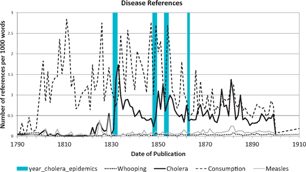
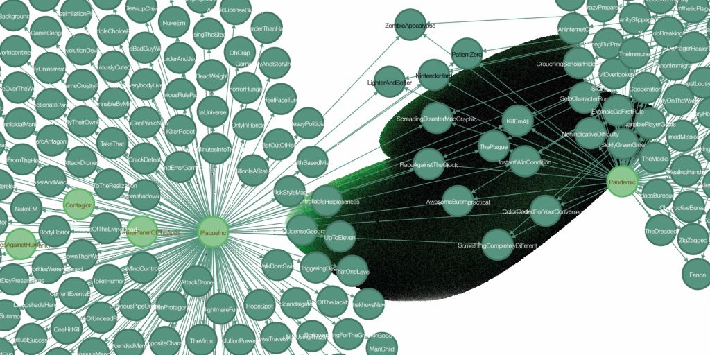
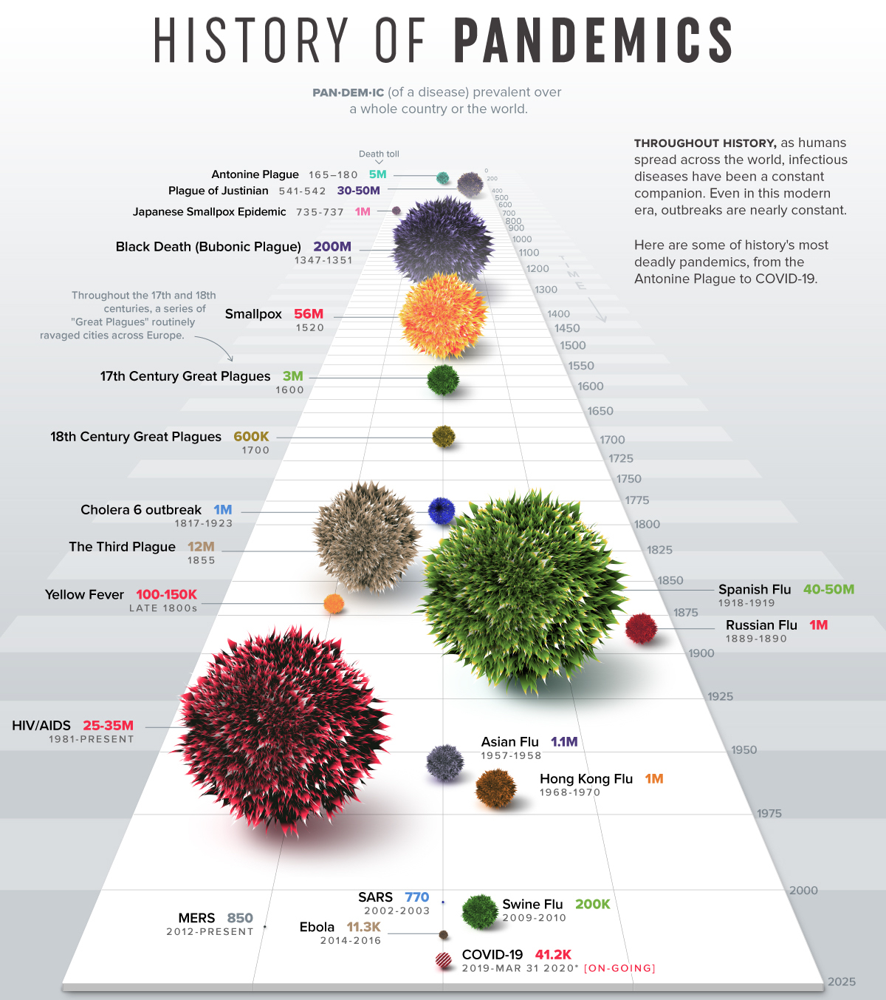
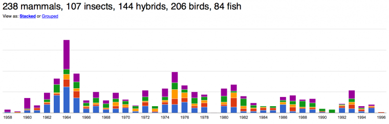

Эпидемии преследуют человечество с начала времен, и у гуманитариев к ним — особое отношение. Роль болезней в истории цивилизации велика: от «Афинской чумы», перечеркнувшей политическую карьеру Перикла и остановившей войну со Спартой, до «испанки», погубившей больше людей, чем Первая мировая война прямо перед ней. Между ними были Юстинианова чума, которая опустошила Византию в VI веке, «Черная смерть», уничтожившая 30-50% населения средневековой Европы, и бесчисленные другие вспышки чумы, оспы, холеры, тифа, кори и неустановленных болезней.

Эпидемии оставили огромный след в культуре: от Чосера, Боккаччо и средневекового макабра — до Альбера Камю и «Аббатства Даунтон». Чума — важный мотив в творчестве Шекспира, который и сам пережил появления болезни в Лондоне, и упоминал ее во многих пьесах. Не будь эпидемий — и знаменитая фраза из Ромео и Джульетты про «чуму на оба ваших дома» звучала бы иначе.
Ну а для русской литературы важна вспышка холеры 1830-1831 годов — из-за нее случилась Болдинская осень. Трехмесячный холерный карантин Пушкина в нижегородском имении оказался самым продуктивным периодом его творчества. Тогда был дописан «Евгений Онегин», созданы «Повести Белкина», «Домик в Коломне», 32 лирических стихотворения и, конечно, «Маленькие трагедии», среди которых «Пир во время чумы».
Чтобы для вас карантин оказался таким же продуктивным и вдохновляющим, мы собрали специальный коронавирусный выпуск «Вестника Digital Humanities».
Terras M. и др. Enabling complex analysis of large-scale digital collections: humanities research, high-performance computing, and transforming access to British Library digital collections // Digital Scholarship in the Humanities. 2017. Т. 33. № 2. С. 456–466.
Статья о том, как можно использовать большие гуманитарные данные для получения нового знания. Авторы говорят нам примерно следующее:
Давайте попробуем ответить на вопрос, почему так происходит и как это изменить?
Далее авторы собирают вместе нецифровых гуманитариев и IT-специалистов — и тестируют возможности масштабных цифровых исследований. Часть статьи — описание двух «модельных» исследований, произведенных авторами на материале цифровых коллекций Британской библиотеки. И первое исследование как раз посвящено эпидемиям. Изучается корреляция вспышек холеры в XIX веке — и сообщений о холере в текстах.
Исследование показывает, что с каждой следующей эпидемией корреляции все меньше: холеру начинают упоминать вне прямой связи с очередной вспышкой.
Свежее исследование жанра «эпидемический апокалипсис» цифровыми методами. При помощи сетевого анализа, графовой базы данных Neo4J и сайта TV Tropes исследуются общие тропы (повествовательные схемы) популярных игр и фильмов про эпидемии.
В числе общих найденных тропов — такие актуальные, как «Ripped From The Headlines» («Сюжет стащили из новостей»), «Spreading Disaster Map Graphic» (Карта распространения вируса) и другие.
Если после прочтения предыдущей статьи вам захотелось тоже сделать какое-нибудь экспресс-исследование, но не хватает технологических навыков, то присмотритесь к онлайн-курсам. Это отличная замена выпавшим из-за коронавируса парам и отличный формат домашнего самообразования.
Тем более что многие платформы сейчас объявили специальные условия, сделали скидки или открыли свои курсы бесплатно. Особенно круто если вы студент — тогда для вас открылись бесплатные возможности Coursera (которая и раньше щедро раздавала финансовую помощь по заявкам) или EdX. Кстати, на EdX есть курс по Digital Humanities от Гарварда.
Еще одна возможность полезно провести время — YouTube. Например, на YouTube-канале Центра цифровых гуманитарных исследований НИУ ВШЭ появились видеозаписи докладов с IV Московско-тартуской школы по Digital Humanities. Целый плейлист. Можно отвлечься от новостей про коронавирус и посмотреть доклады из времен, когда еще можно было делать доклады в полной аудитории живых невиртуальных людей.
Мы давно собирались добавить в «Вестник» рубрику с обзором разных коллекций данных. Но тут нас заставила ситуация: в вирусном выпуске нельзя не упомянуть инициативу по созданию единого большого датасета исследований по коронавирусу — CORD-19. Вот здесь можно посмотреть на сам датасет, а здесь —— на пример его использования (попытку построить поисковик по датасету).
Есть и другие наборы данных по коронавирусу — они пополняются и обновляются каждый день. Искать проще всего с помощью специализированного поисковика по датасетам от Google. Например, так.
Чтобы данные стали понятными, их обычно требуется визуализировать. Вообще с событиями вроде пандемий актуальность визуализации научных данных — статистики, моделей, симуляций — всегда возрастает. И это возможность для ученых заявить о себе громче, чем обычно. Например, американский Университет Джонса Хопкинса явно повысил узнаваемость бренда в несколько раз — мир уже второй месяц залипает в их карту распространения коронавируса. Очень популярны интерактивные симуляции распространения вируса, сделанные на JavaScript, вроде этой (вот здесь можно прочитать, как такое делается). И конечно, сравнительные визуализации размера разных исторических эпидемий — какая унесла больше жизней.
Кстати, возвращаясь к образованию и онлайн-курсам: искусству визуализации тоже можно поучиться, пока сидите на карантине. Присмотритесь вот к этим программам (раз, два) по визуализации данных на Coursera.
Сегодня в этой классической рубрике «Вестника Digital Humanities» необычный гость — поэт-нобелиат Иосиф Бродский. Виной тому снова коронавирус. Бродский, и без того обладавший неплохим показателем виральности на культурном поле, в дни всеобщей самоизоляции завирусился еще сильнее. Причина очевидна — то самое стихотворение «Не выходи из комнаты, не совершай ошибку».
На фоне новой волны популярности Бродского мы решили рассказать о Joseph Brodsky: Digital Humanities Lab — лаборатории цифровых гуманитариев в Йельском университете, построенной вокруг архива поэта. Здесь подсчитывают упоминания животных в текстах Бродского, изучают его «астрономическую» лексику, анализируют упоминания частей речи, а также стремятся смоделировать его сеть культурных контактов.
 Упоминания животных у Бродского, анализ Ингрид Нордгард (Ingrid Nordgaard)Мы с интересом прочли текст о том, как зарождалась Joseph Brodsky: Digital Humanities Lab. Изначально поход в Digital Humanities был для исследователей наследия Бродского педагогическим экспериментом:
From the start, the Brodsky Lab was an attempt to experiment with pedagogical practice. The Yale Slavic Department has a historical strength in émigré material; meanwhile, our graduate students are increasingly interested in learning new methods and frameworks, as well as in expanding their training in archival research of both the paper and digital kind.
В этом эксперименте сразу же была установка на союз гуманитариев с IT-специалистами:
It was as much a collaboration as a class, with as many instructors as students—including Peter Leonard, our Digital Humanities librarian; Lisa Conathan, the Beinecke librarian who processed the Brodsky papers; and Trip Kirkpatrick, in IT and now the Center for Teaching and Learning. This was my favorite aspect of the project: pulling into the open the diverse kinds of work and collaborations that usually take place behind the scenes at the university.
Создатели лаборатории с самого начала соблюдали здоровый баланс между энтузиазмом и критическим отношением к цифровым методам. С одной стороны, они читали Франко Моретти и Мэтью Джокерса, вдохновляясь идеями «дальнего чтения». С другой — погружались в практики традиционных гуманитарных исследований и пытались ответить на вопрос, что делает такие работы «легитимными» с научной точки зрения.
Pedagogically speaking, this forced us to think critically about what constitutes “legitimate” research in the humanities, and how that changes over time. The students were sharply critical of positivist approaches and impressionistic, ideologically marked studies alike
Основатели надеются превратить свою инициативу, зародившуюся вокруг Бродского, в большую международную платформу по изучению русской и восточноевропейской эмиграции цифровыми методами, с опорой на семиотику и анализ поэтики в формалистской традиции.
Надеемся, что после коронавируса это непременно случится. Ну а пока — действуем по инструкции в концовке «вирусного» стихотворения Бродского:
...Запрись и забаррикадируйся шкафом от хроноса, космоса, эроса, расы, вируса. Ваш, Вестник Digital Humanites